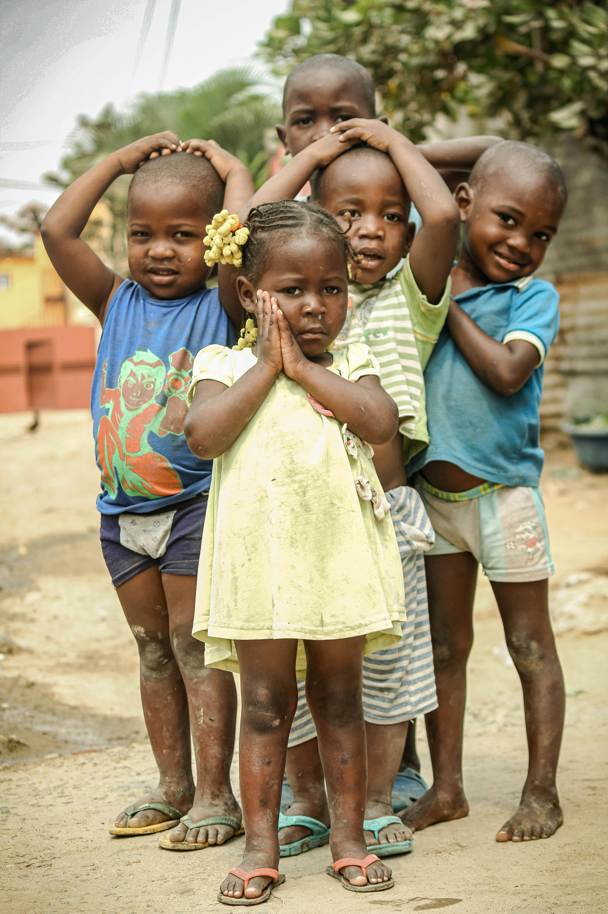
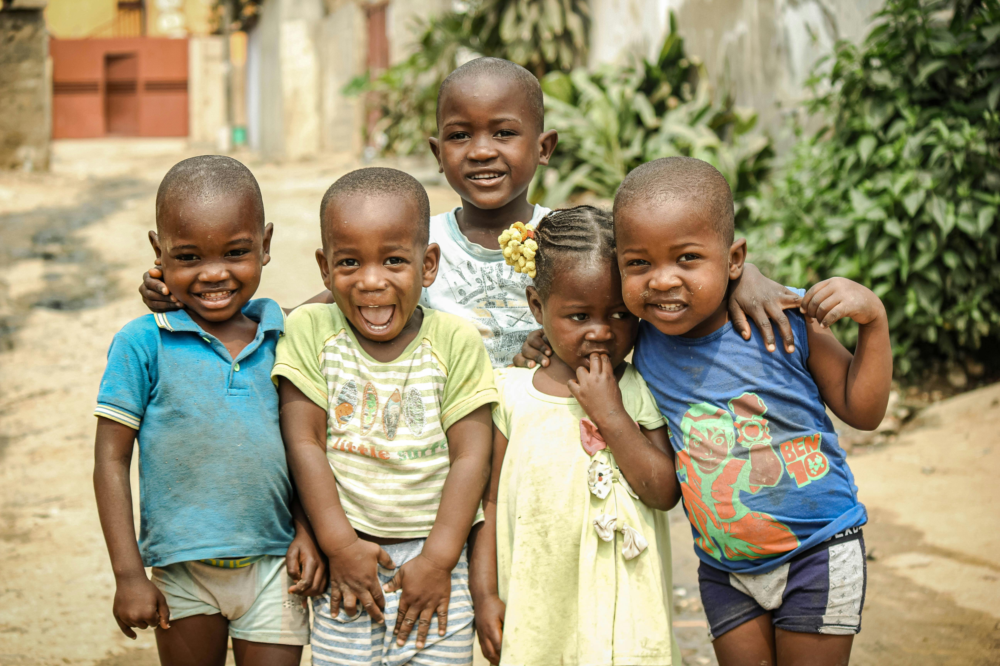
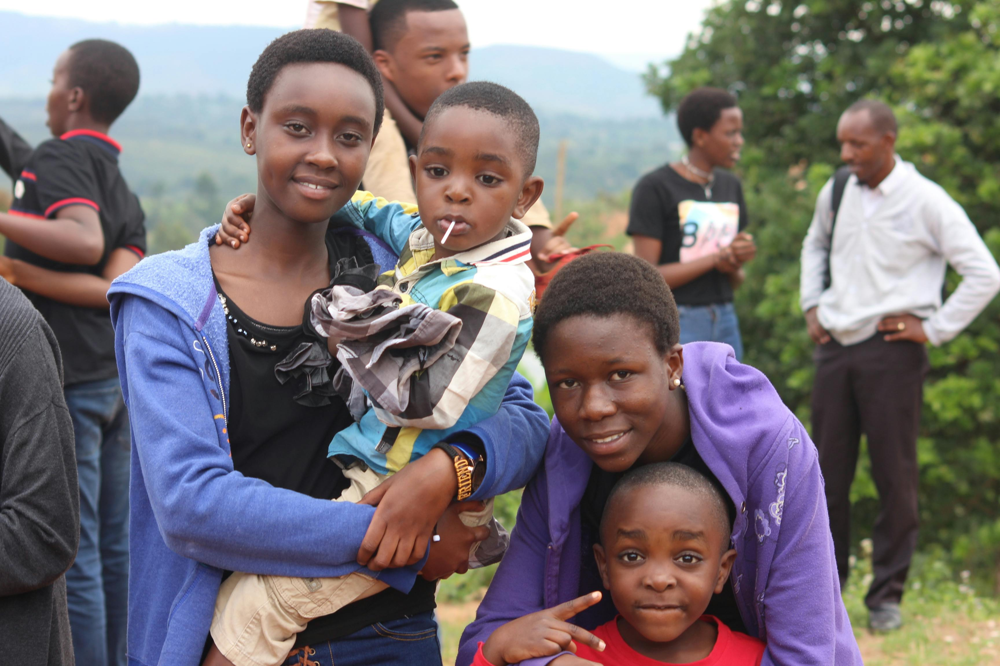

Welcome to our heart warming pictorial exhibition which captures the beautiful moments we have had during our searchand rescue missions in both Kenya and Malaysia. Most of the children in this pictures have been traumatised by the harsh cruel world and come fro various background including orphans, forced marriages, FGM practises and maritial conflicts. They have been rescued by the Amani projects to help them get to their feet until they become young responsible adults and then relised to the world again. Enjoy the beautiful moments we shared with them through the photos for memories live forever.
Welcome to our heartwarming gallery—a tapestry of resilience, love, and second chances. Each image captured here tells a story—a story of hope rekindled, of tiny hands reaching for brighter tomorrows. Step into the frames and witness the magic unfold: Homecomings: Faces aglow with anticipation, children find solace within our walls. Their eyes, once filled with uncertainty, now sparkle with newfound belonging. Snapshots of tearful reunions, hugs that bridge lifetimes, and laughter echoing through corridors—these are the moments that define us. Education in Action: In the classroom, dreams take root. Photographs of eager faces bent over textbooks, chalk dust dancing in sunbeams, and teachers guiding young minds—they all speak of possibility. Our commitment to education ensures that these children write their own narratives, one alphabet at a time. Playtime Adventures: Swing sets, soccer balls, and skipping ropes—our playground bursts with joy. Freeze-frame those carefree afternoons when scraped knees are badges of courage, and imaginations run wild. These snapshots remind us that childhood knows no boundaries. Artistry Unleashed: Crayons meet paper, and magic happens. Our art room is a sanctuary where colors heal wounds and creativity knows no limits. Capture the vibrancy of painted sunsets, clay sculptures, and the pride in a child’s eyes when they hold their masterpiece. Celebrating Milestones: Birthdays, graduations, and toothless grins—we celebrate them all. Blow out candles on a cake made with love, toss graduation caps into the air, and witness the resilience etched in every smile. These moments are our shared victories. Outdoor Adventures: From picnics in sun-dappled meadows to nature walks along babbling brooks, our children explore the world. Photographs of muddy boots, butterfly-chased giggles, and starlit campfires remind us that adventure awaits even in the smallest corners. Family Bonds: Whether biological or chosen, family is everything. Capture siblings holding hands, caregivers wiping away tears, and bedtime stories whispered under cozy blankets. These frames tell tales of bonds forged in love and adversity.
  